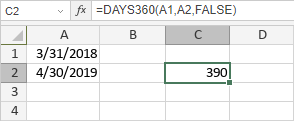

DAYS360 funkcija
Funkcija DAYS360 je jedna od funkcija za datum i vreme. Koristi se za vraćanje broja dana između dva datuma (start_date i end_date) zasnovano na 360-dnevnoj godini koristeći jedan od metoda izračunavanja (američki ili evropski).
Sintaksa
DAYS360(start_date, end_date, [method])
Funkcija DAYS360 ima sledeće argumente:
| Argument | Opis |
|---|---|
| start_date | start_date i end_date su dva datuma između kojih želite da izračunate broj dana. |
| end_date | start_date i end_date su dva datuma između kojih želite da izračunate broj dana. |
| method | Opcioni logički parametar: TRUE ili FALSE. Ako je postavljen na TRUE, izračunavanje se vrši po evropskom metodu, gde datumi početka i kraja koji padaju na 31. dan meseca postaju jednaki 30. danu istog meseca. Ako je FALSE ili nije naveden, izračunavanje se vrši po američkom metodu: ako je početni datum poslednji dan meseca, postaje jednak 30. danu istog meseca. Ako je krajnji datum poslednji dan meseca, a početni datum je raniji od 30. dana, krajnji datum postaje 1. sledećeg meseca. U suprotnom, krajnji datum postaje 30. dan istog meseca. |
Napomene
Kako primeniti funkciju DAYS360.
Primeri
Slika ispod prikazuje rezultat koji vraća funkcija DAYS360.
